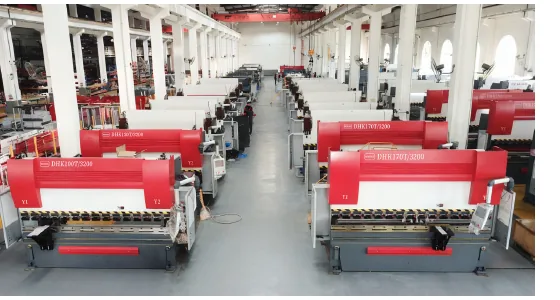
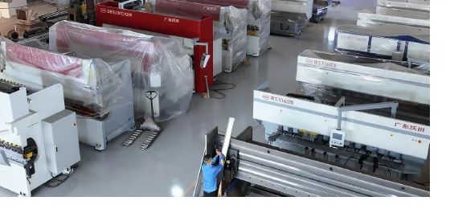

WE67K Series
DHK Electro-Hydraulic Hybrid Servo CNC Press Brake
High-precision CNC bending for export sheet-metal workshops that need repeatable angles, multi-axis control, and stable production.
View landing pageWOTIAN CNC helps overseas buyers source reliable sheet-metal equipment with practical model selection, customization, factory-direct pricing, and responsive quotation support.

Instead of only listing model numbers, this site organizes WOTIAN equipment by the job buyers need to solve: accurate bending, economical bending, long-workpiece forming, V-grooving, cutting, panel bending, and laser processing.
High-precision CNC bending for export sheet-metal workshops that need repeatable angles, multi-axis control, and stable production.
View landing page
A practical hydraulic press brake for buyers who need reliable bending capacity, simple operation, and lower investment cost.
View landing page
Compact all-electric bending for precise small and medium parts, clean workshops, and energy-conscious production lines.
View landing page
Synchronized tandem bending for extra-long workpieces, with the flexibility to run two machines together or separately.
View landing page
CNC V-grooving equipment for sharp bends, decorative sheet-metal surfaces, and reduced bending load before forming.
View landing page
Hydraulic guillotine and swing-beam shears for reliable sheet cutting before bending, welding, and forming.
View landing page
Overseas buyers can request matching by material thickness, part size, daily output, automation level, and target budget. Machines can be prepared with export packing, documentation support, and practical communication for installation planning.
WOTIAN can quote standard models or customized configurations for overseas distributors, manufacturers, and project buyers.
Yes. The catalog states special model customization is available. Buyers can request tonnage, bending length, control system, tooling, voltage, color, and packaging options.
Send material type, thickness, sheet length, target products, daily output, required accuracy, destination country, and any preferred controller or tooling brand.
Yes. The site highlights export packaging, machine protection, documentation support, and shipment coordination for overseas buyers.
Choose CNC press brakes for higher accuracy and repeatability, NC press brakes for economical general bending, electric servo models for clean compact precision work, and tandem machines for extra-long parts.